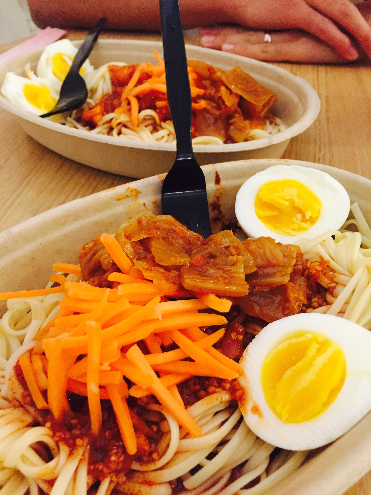

Like it or not, our relationship owes a lot to Expedia and the Dartmouth Coach. It had to be that both schools are located well apart from the so-called major cities, which is why transportation is a major issue - major, as in well above 6-7 hours to get from one school to another. This is a story about all the mileage we've accumulated over the past year.
Post-Miami was literally the only time we had taken an airplane together. It was nice to know how short the ride felt together, as opposed to the sheer amount of time we had to spend alone in the bus/plane otherwise. Unfortunately I had a midterm and a major project coming up the week after Spring Break (professors are really cruel that way), so we had to split whatever time we'd had to explore the Duke campus and spend time together.
Nicole and I had been quite literally singing hymns about cherry blossoms for some time now. It happened to be one of our favorite flowers (my personal favorite; her number one flowers are yellow tulips, but they're still somewhere high up on the list), and they're really good to take pictures with, above anything else. Thankfully, the North Carolina sun had warmed up enough to beget the white-pink flowers by the time late March had arrived, and all credits for the following pictures go to the sun above.
The temperate weather also meant a lot of time in the Duke Gardens, a school landmark that's famous for being picturesque. For obvious reasons it's one of Nicole's favorite spots on campus, which explains the massive number of photos that we have from the garden. Sometimes we just went out and lay there like a picnic, no agenda whatsoever, just because the weather was so nice. You would, too, if your sun was this nice and if you had a garden this colorful.


Other times we spent visiting nearby restaurants and malls - most notably Southpoint, which is a metropolis compared to the rather rustic standards our schools have forced upon us. Just look how happy we look - two country students out in the city!
Durham, for God knows why, happens to be one of the foodiest cities in the US. This means that despite the number of places we've already been to, there are tens, maybe even hundreds of places that we have yet to visit. But that doesn't mean we haven't been cutting slack; in fact, we've gone as far as to visit three places in one evening.
The festivals that occasionally take place are good letouts as well. This one was the international food fest at Duke, which I had no idea was happening, but ended up being pretty enjoyable in the end. As all carnivals go, everything - edible or not - was deep-fried and salted. Nicole sure enjoyed the funnel cakes, which was a first-time thing for her.
But despite all that's taken place at Duke, my favorite by far has to be my birthday party, which was celebrated a little in advance because my actual birthday would be on a weekday where we wouldn't be together. The day started off with rendezvous shopping at a grocery store, because after having weighed the two options of either cooking spaghetti for ourselves or going out to get steak, we decided on the former, for memory's sake. We'd struggled to figure out what we needed, let alone where to get it. But hey, we got a cute picture while we were at it.
Cooking was not much better performance-wise, in that we probably had no idea what we were doing. I seem to remember a lot of thinking and discussing, but not much of the actual cooking. A lot of credit goes to the marinara sauce in the can, which essentially did most of the cooking for us. But as time passed we started to get the hang of things, and we even had the foresight to add additional ingredients here and there, including parsley and cheese.
Considering how inexperienced we had been, the end result was surprisingly successful. Despite what she thought, I really did consider the food to be delectable, I truly did. But the spaghetti was just the beginning, as Nicole sheepishly revealed everything she had prepared just for me: a wallet (owing to the unfortunate accident at Miami), a chocolate cake with my name written in icing, a full-size letter on a huge sheet of paper, a pack of small Ghiradelli chocolates with short letters attached to each of them, and my personal favorite, a sundae-shaped letter that played the Happy Birthday tune whenever it was opened.
It was the best birthday I'd ever had, light-years ahead of all other competitiors. April 26th was always in the middle of some midterm or finals period, so for the last 8-9 years my birthday had gone largely ignored. Sure, the birthday cakes were always there, but this was the first time I'd actually felt like it was a celebration, as opposed to a ritual. I've already mentioned that I really do enjoy my birthdays, because it's the one time of the year when you are the center of attention, at least for a brief moment. Nicole had taken the whole attention thing to a new level, in that I almost felt like a rockstar adorned with gifts from all around the world - but this time, my world was really just one person.
Obviously I was ecstatic. What gave me away?
Because we celebrate everything together, and because of everything she had done for me, it was she who deserved flowers on the actual day of my birthday, not me.

The only time I'd seen New Hampshire was on a quarter: yes, those state-by-state quarters, and even then I remember New Hampshire for its nondescriptive huge chuck of rock. Conan O'Brien put it best: "the state that's next to the state where Ben and Jerry's is made". Never in a million years did I think that I would find myself in the woods of The Granite State - why they call themselves that, I have yet to figure out.
Turns out, it would become by far the most checked-in state for me, and quiet (and a little dull) as it may be, I did come to like the scenic mountains and forests that come to define the place (this from the official state website: New Hampshire has four nicknames...Switzerland of America: for our beautiful mountain scenery. Again, I have yet to meet one person who uses that nickname).
Post-Duke shenanigans, the quarter system struck again, but this time it was to our advantage for once. I was done with finals by early May, but Nicole still had a full month of classes to go. She had needed help with move-out from her dorm anyway, so it was only natural that I head over to help her out. Well, truth be told that was an excuse to justify my going there to spend time with her - it was a surefire way to convince our parents.
One of our favorite places to stroll by is the nearby Hanover Country Club, which is essentially a vast, vast, vast (you get the point) mass of land with golf courses and fields as far as the eye can see. It's the quintessential Dartmouth experience, in how we meander through nature in its most pristine form, devoid of modern society's distractions. The settings help us focus on one another, as opposed to whatever used to prevent us from having conversations or just enjoying each other's company, be it technology, schoolwork, you name it.

Another notable place to hang out is Main Street, which, despite its rather grandiose nomenclature, is actually just a single street block with shops and cafes, targeted at not only the local college students but also the older population who live in the scenic houses near campus (it was for this reason that Dartmouth basically has no safety issues in the streets - no offense, but it would be a little hard to be mugged by senior citizens who are 70+ years old).
Quips aside, Main Street actually has a lot of places that I really do enjoy. My favorite by far is Molly's, a family restaurant that is reasonably priced and highly enjoyable. Maybe it's the atmosphere, maybe it's the bread and butter that they serve before every meal, or maybe it's just how they cook their meat. Whatever it is, the place deserves all the stars in Hanover for whipping up some of the best tuna steak I've tasted anywhere.
Another one of our go-to places is Hanover Inn, by far the most high-end place in all of Hanover, if not the entire state (probably not). It's that place you suit up and bring your A game on for, not just because of the pricier menu, but because of the overall classy vibe that resonates. Scallops. If I had to use one word to describe this place, it wouldn't be classy, it wouldn't be fancy, it would be scallops, because that's just how good it is. We had it on one of our night-out dinners, and the menu we stumbled upon by chance turned out to be one of the best things any of us had put in our mouths. On days we already had dinner, we would occasionally dress up just to enjoy a casual cocktail or two as well. Also notice just how nice we look each time.
Still other times we would get creative and cook up some of the most rendezvous recipes we could with the resources we were given with. Hanover has a very nice Farmer's Co-op, where we could get the freshest ingredients at a cheap price. After the successful spaghetti we had made back in Durham, we became a little more adventurous and went ahead with some spicy noodles that are a summer treat back in Korea. That's when we really learned that canned sauce is one of mankind's greatest inventions, because concocting sauce ourselves turned out to be a lot harder than it seemed online.
The FoCo was another hotspot for our culinary experiments. The stir-fry section offered a whole variety of different ingredients and condiments that we could use to create our own dinners, and often we would have so-called showdowns to see who would come up with the better food to feed ourselves (so far, the score is one to one). And if all went wrong, the place always had amazing ice cream to lift our spirits, so all was good.
But most of the times we just meander around, enjoying fried rice from Thai Orchid, stealing licks from each others' cones at Morano Gelato, ordering random Everything But Anchovies pizzas at midnight, stepping into Murphy's for a super-casual beer or two (or five), or simply enjoying the sunset at the Big Green. At the end of the day, it all comes down to the obvious but most important fact: that we were holding hands while doing whatever we were doing.
Dickens' Tale of Two Cities starts off with the famous following lines: It was the best of times, it was the worst of times. But for this version of the story starring the two of us, there are no worst of times, just the best of times to different degrees.